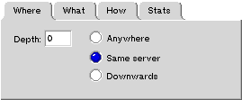

Stamina is a handy utility for capturing web sites onto your hard disk. You can browse the captured files offline through Charisma, a personal proxy server. Charisma will also fetch and cache unavailable data.
Stamina & Charisma v1.4 only run under BeOS R4 and later versions. They run best with NetPositive 2.0.
During the capture, you can't change the options, but you can watch the process in the Stats tab. If errors are encountered, they are logged to the bottom of the window.
You can also start more captures by asking for a New Window in the File menu. But watch out for your bandwidth.
Do you wish to grab the site that is currently displayed in NetPositive's window? Pull Get URL from Net+ in the Edit menu. This will get the URL for you. If there are several NetPositive windows open, this command will cycle through them.
|  | This tells Stamina where to go. If Depth is set to 0, only the page with the given URL will be captured (with its images and all the tra-la-la). If Depth is set to 1, the pages directly linked to this one will be captured, and so on. If Same server is chosen, links to other servers will be ignored, and if Downwards is demanded, only sub-directories of the base directory will be explored. |
| This tells Stamina what to grab. These controls are self-explanatory, except for Non-HTML, which means "follow links to non-HTML files", possibly files like "thebigfile.zip" or stand-alone images. | |
The trickiest is in Smart Refresh. If a site has already been visited by Stamina, Stamina will check that old files are not out of date. For instance, if you select After 1 week, Stamina will check all files that have not been checked for 1 week. Always means "always check". Dumb means "always retrieve document, even if it seams up-to-date" (this may help if your cache is corrupted). Max connections is the maximum number of simultaneous connections to the Internet. |
All these options may be saved for future re-use (item Save in menu File). You can later refresh your data by just opening your Stamina file and clicking Start.
So where do all the files go ?The captured files are carefully strored according to their origin host and hierarchy in a folder named /boot/home/theWWW. You can try to view them with Net+ from there, but it is not a very good idea, since absolute links (containing http://) will not point to the cached data. This is where the Charisma stuff starts. |
|
 |
When Net+ Autosettings is enabled in Charisma's Settings menu, Charisma will automatically tell NetPositive 2.0 to use Charisma as a proxy server. This results in NetPositive's settings window popping briefly. Charisma will also re-configure NetPositive to normal use when it quits or when it goes into Disabled mode.
If this script magic fails (new version of NetPositive...), you must configure NetPositive yourself: enable proxies, set the HTTP proxy to be 127.0.0.1, and the HTTP port to be 8080. This also applies if you use some browser other than NetPositive.
If you want Charisma to start automatically after system boot, append the following line to the file /boot/home/config/boot/UserBootscript:
Launch application/x-vnd.SD-Charisma
If your page fails to update although you have just refreshed it with Stamina, or if your page displays "not in Charisma's cache" although you know it actually is, it may be due to cache inconsistancy between Charisma and your bowser. Indeed, every browser including NetPositive has its own private cache which may contain older data. Try to refresh your page with your browser's reload button. If this fails, clear your browser's cache.
If your page or image has displayed without an error message but it is dirty or incomplete, then perhaps the corresponding file is damaged in such a way that Charisma can't know it is. There are two ways to fix this: either you manually remove the damaged file, or you set Refresh to be dumb (in Charisma), and you reload the file (then reset Refresh to normal, otherwise all files will always be reloaded).
Stamina+Charisma are now unsupported and free. When asked for your name and code, enter
FREE as the name and A1-E586 as the code.
Stamina & Charisma 1.4 only run under BeOS R4 (PPC and Intel platforms).
This software and its documentation can be distributed freely in the form of the original zip archive.
Stamina & Charisma 1.4 and this documentation ©1998-1999, Sylvain Demongeot
In using this software, you understand and agree that this software is provided "as is" without warranty of any kind. The entire risk as to the results and performance of using this software lies entirely with you, the user. The author does not make any warranties, either expressed or implied, including but not limited to implied warranties of merchantability and fitness for a particular purpose, with respect to this software. In no event shall the author be liable for any consequential, incidental, or special damages whatsoever (including without limitation damages for loss of critical data, loss of profits, interruption of business, and the like) arising out of the use or inability to use this software.
Although the author would appreciate any feedback and bug reports, the author shall not be responsible for correcting any problems which you discover. Furthermore, the author may at any time replace, modify, alter, improve, enhance or change this software.